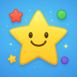

Free Online Token Board for Kids
I am working for
Tap a circle to add a token
0 of 10 earned
How to use the token board
- 1
Pick the reward
Tap the 🎨 Style button under the board and choose a reward. Tell the child what they are working for: "Ten stars, then the tablet."
- 2
Tap a slot for each success
Tap any empty slot to add a token, in any order. Tapped one by mistake? Tap it again to remove it.
- 3
Board full → give the reward
When the last slot fills, the board says "You did it!". Give the reward, then tap "Hooray!" to reset the board.
Works on any screen: laptop, Chromebook, iPad, phone, interactive whiteboard, or shared in Zoom / Google Meet.
Pricing
One-time unlock, no subscription
Everything in the free token board stays free. The unlock adds:
What’s included
- Your own photos as the reward and the background
- Up to 20 boards — one for each child or goal
- Any token goal from 3 to 100
- All 59 rewards
- All 23 token icons
- All 8 backgrounds
- Works on every device you use — no device limit
- Restore by license key or email
- Lifetime, one payment
Unlock all extras
$19.99
one-time
One-time paymentno subscriptionsecure checkout by Link (Stripe)unlocks instantly, key also emailed
Web version only — the iPhone, iPad and Mac app is sold separately in the App Store. Price in USD, plus tax where applicable. Your license key is shown after payment and sent by email. Charged by Link (Stripe). Terms · Privacy
Frequently asked questions
What is a token board?
A token board is a visual reward chart: a child earns a token for each success and trades a full board for a reward chosen in advance. It comes from ABA (Applied Behavior Analysis) and is used in therapy, in classrooms and at home. A research review of token economies for children with autism and intellectual disability reports improvements in engagement and on-task behavior when token systems are used consistently (Matson & Boisjoli, 2009).
How many tokens should I start with?
Start with 3 to 5 tokens for a beginner, and 10 for most kids who already know the system. Set the goal with the 🎨 Style button under the board (Token goal): tap 3, 5 or 10; any other number from 3 to 100 is part of the one-time unlock. The first reward should come quickly, then you can raise the goal. If even 3 tokens are too many, use a First-Then board (one task, then the reward), for example our free First Then Board.
How do I pick a reward (reinforcer)?
Pick what the child wants right now, not what you think they should want: a short play break, a favorite toy, a snack, screen time or a special activity. Rotate rewards when one stops working, because a reinforcer only works while the child still wants it. Need ideas? See our 50 token board reward ideas.
Can I print it?
No. This board is a screen tool: it runs in the browser on a laptop, tablet, phone or whiteboard and resets with one tap. If you want a paper board, read our guide on printable vs digital token boards.
Does it work in teletherapy?
Yes. Share the browser tab or window in Zoom or Google Meet, tap the slots on your side, and the child sees each token appear. Turn on "share sound" in the sharing dialog so the child also hears the tone and the celebration.
Is it free?
Yes. The online token board is free, with no account and no ads: one board with a token goal of 3, 5 or 10, a star token, a white background and a gift reward. More boards, other token goals, icons, backgrounds, rewards and your own photos are extras: an optional one-time unlock for $19.99 plus tax where applicable adds them all, with no subscription. The free board keeps working without it.
What does the one-time unlock include?
The one-time unlock adds your own photos, up to 20 boards, any token goal from 3 to 100, and all 59 rewards, 23 token icons and 8 backgrounds to the online token board. Everything in the free token board stays free. The unlock is for the web version at token-board.app; the iPhone, iPad and Mac app is sold separately in the App Store.
Is the unlock a subscription?
No. It is a one-time payment of $19.99 plus tax where applicable — the exact total is shown before you pay. There is no renewal; the unlock keeps working for as long as we run the service.
Do I need an account?
No. There is no account at token-board.app. Stripe asks for your email address at checkout to send the receipt; we use the same address to send your license key and to restore your purchase later.
How do I unlock the other devices I use?
Open your restore link on that device, or type your license key — or the email address you paid with — into "Already unlocked? Restore". The restore link and the key are shown after payment and sent by email. The unlock is for the devices you use yourself, with no device limit; sharing the key with others is not allowed. The unlock is saved in the browser: Safari may forget it after a week, and shared or managed computers may clear it at sign-out — then open the restore link again. Your boards and photos stay on each device; the restore link unlocks the extras there, it does not copy a board.
I lost my license key — what can I do?
Type the email address you paid with into "Already unlocked? Restore": if that email paid, we send the restore link and the key again — check your spam folder too. Use the exact address you entered at checkout. No email after 10 minutes? Write to support@token-board.app.
How does the charge appear on my statement?
The unlock is sold and charged by Link (Stripe), the seller of the purchase. It appears on your statement as LINK.COM* APPS4PARENTS. Apps for Parents is the maker of Token Board. The price is in US dollars; your bank may convert it.
Can I get a refund?
Yes. Write to support@token-board.app within 14 days of the purchase and we ask Stripe to refund you in full, no questions asked; the license is then cancelled and the key can no longer be used or restored. This is our own promise on top of the buyer terms of Link (Stripe).
Does the unlock include the iPhone, iPad and Mac app?
No. The unlock is for the web version at token-board.app only. The app "Token Board: ABA Reward Chart" for iPhone, iPad and Mac is free to download in the App Store; its optional premium, Token Board Plus, is bought separately there.
Is anything uploaded?
Everything you set, including photos, is saved only in this browser on this device. Nothing is uploaded. There are no accounts and no ad tracking; anonymous usage statistics only. Removing a photo (×) deletes it from this browser. If you buy the one-time unlock, we store the email address you paid with, your license key and the payment id, so we can deliver and restore your purchase; your board and photos still stay in this browser.
Also available as an app

Token Board: ABA Reward Chart is the same idea as an app for iPhone, iPad and Mac. The web board is the quick version; the app adds many saved boards, a board per child, and more icons and rewards.
- Platform
- iPhone, iPad & Mac (no Android version)
- Free
- Free to download; Token Board Plus removes the limits (plans and prices are shown in the app)
- Ads
- None; anonymous usage statistics only, no ad tracking
- Works offline
- Yes; picture-based, no reading required
- Ages
- About 2 to 12 and any learner in ABA therapy; App Store rating 4+
- Boards
- 3 to 100 tokens, 40+ token icons, photo rewards, a board per child
- Languages
- 7 (English, French, German, Italian, Polish, Portuguese, Spanish)
- Rating
- 4.4 on the App Store from 34 ratings
Token board guides
Practical answers to the questions parents, teachers and therapists search for.
Using the free board
Short pages for one setting each: ABA sessions, First-Then, autism, classroom, teletherapy.